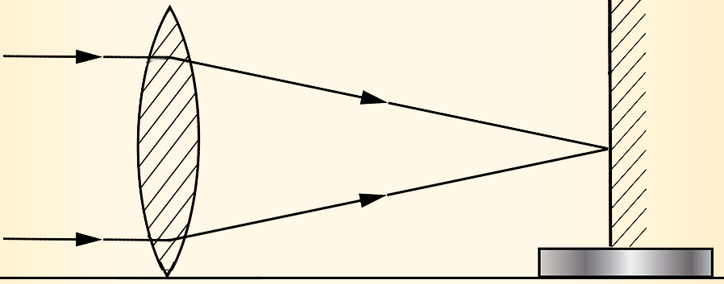

Focal length of a convex lens
The focal length of a converging lens can be determined experimentally using various methods. Activity 5.15 describes one of the methods.

Aim:
To estimate the focal length of a converging lens
Materials:
a converging lens, lens holder, metre rule, plain paper (screen)
Procedure

Question
What is the distance between the screen and the lens?
The image of a distant object is formed at the focal point of a convex lens. Therefore, the distance between the screen and the lens is the focal length of the lens. Note that, this is not a very accurate method but a quick way of estimating the focal length of a convex lens.
Example 5.4
An object is placed 12 cm from a convex lens of a focal length of 18 cm. Using the lens formula, find the position of the image.
Solution
For a convex lens, the value of focal length is positive. Therefore, and .
Because the value of is negative, the image is virtual (on the same side as the object) and is 36 cm from the lens. Because the image is virtual, it is also erect.